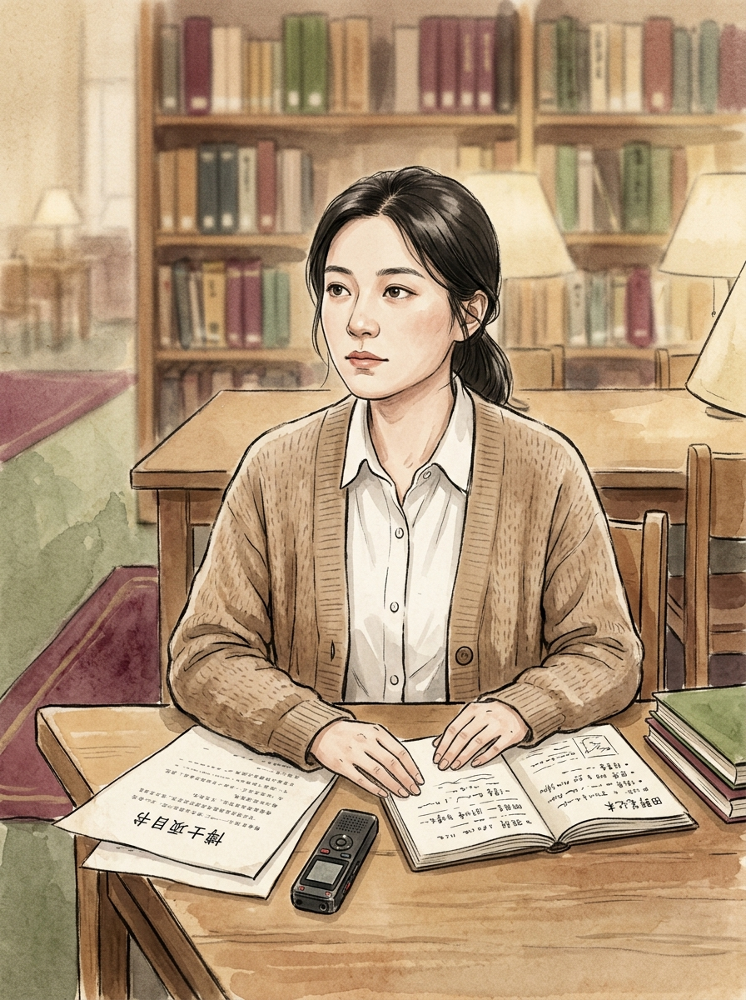
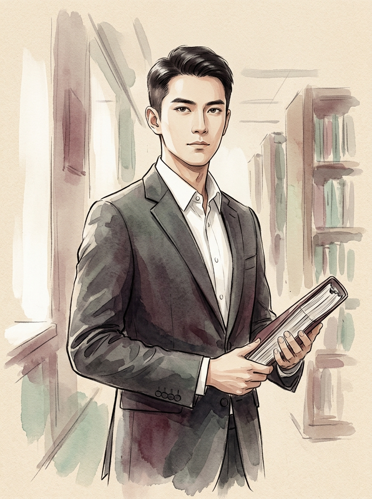
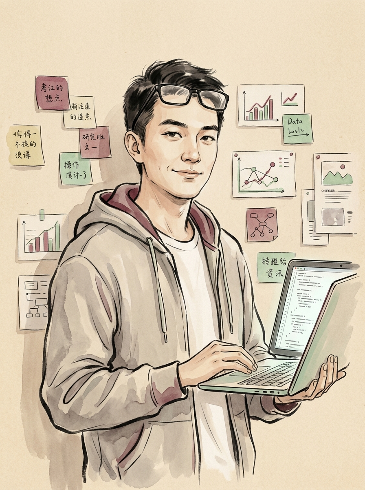
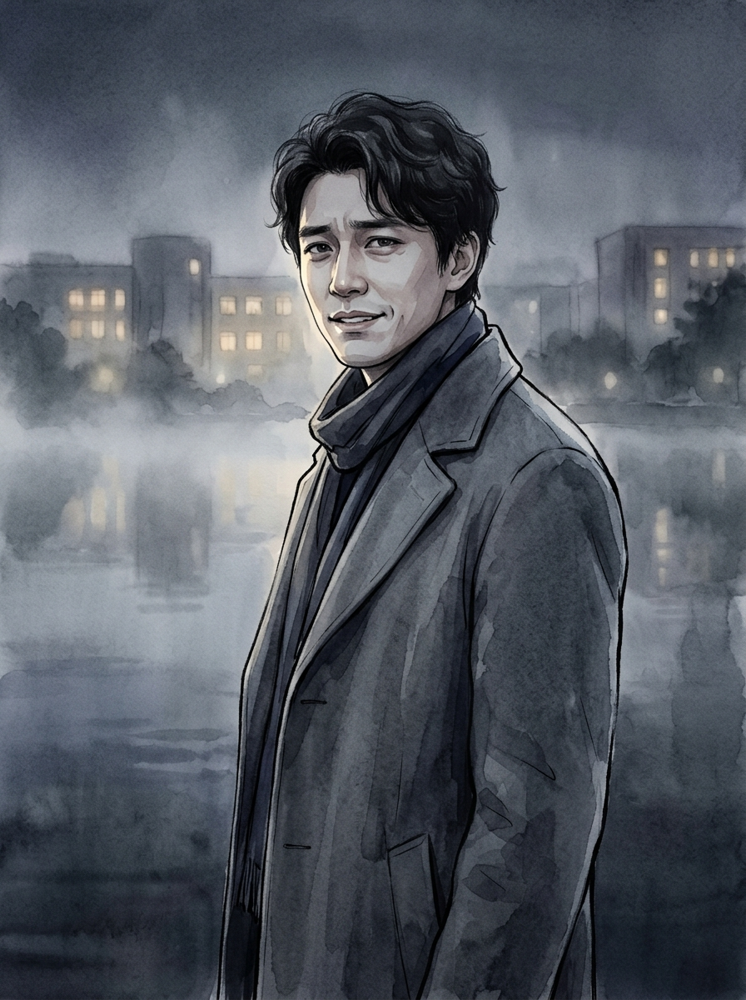
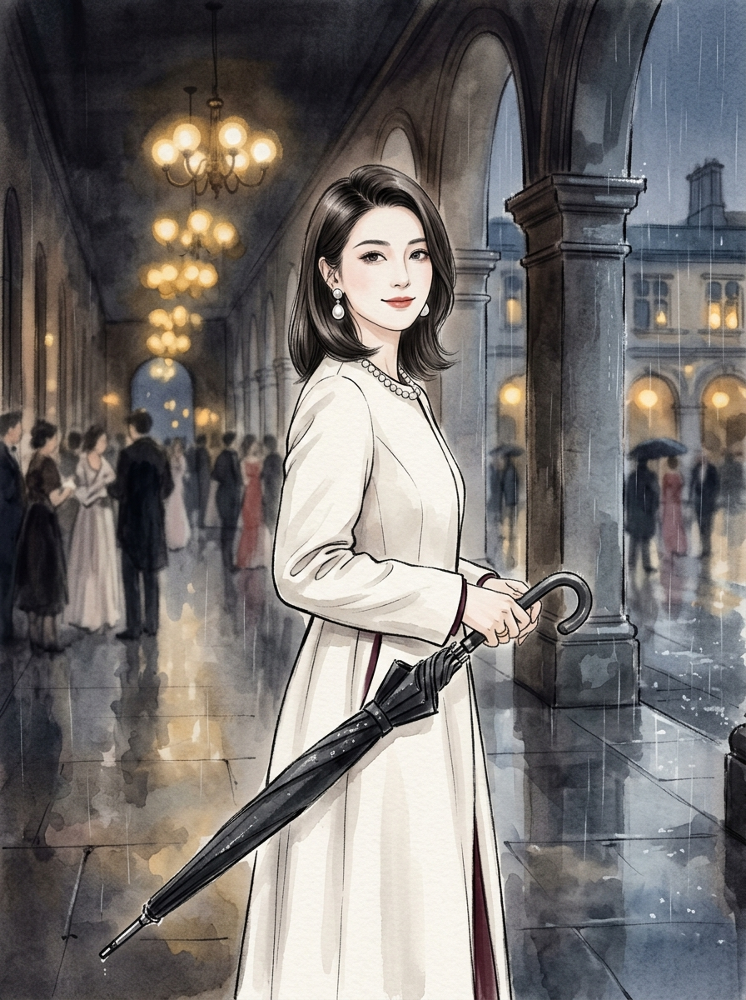
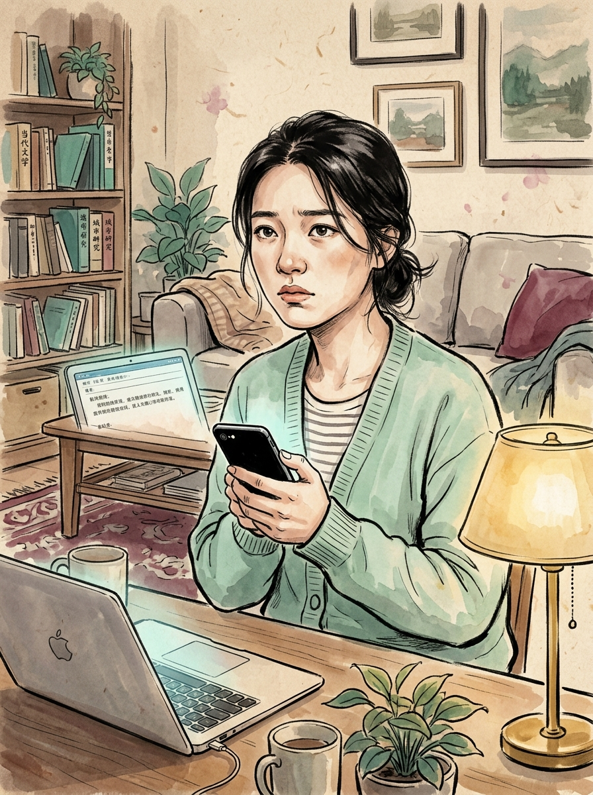
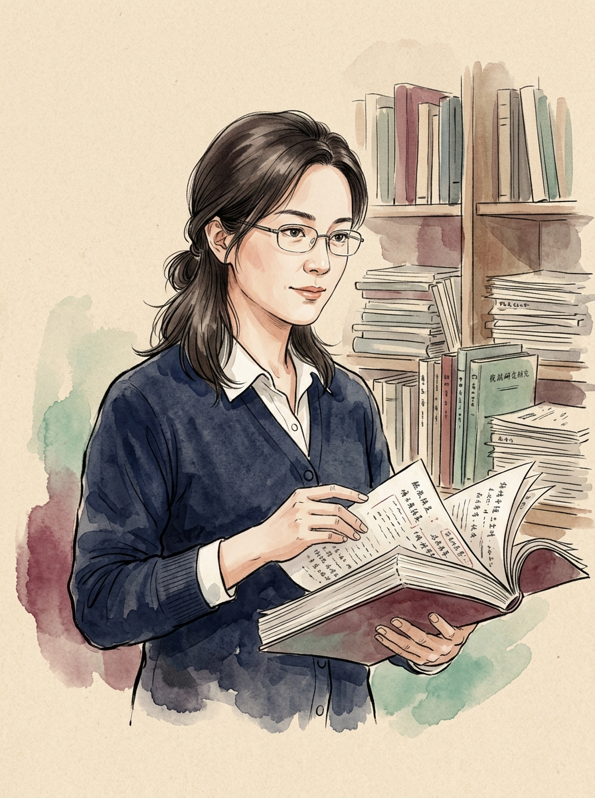
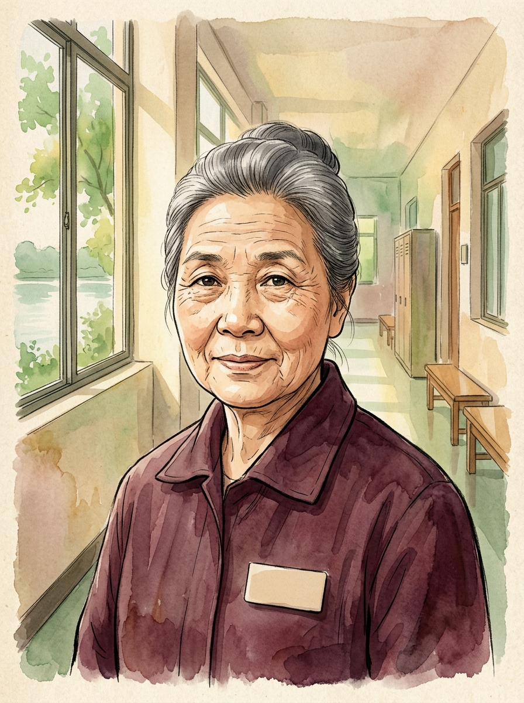
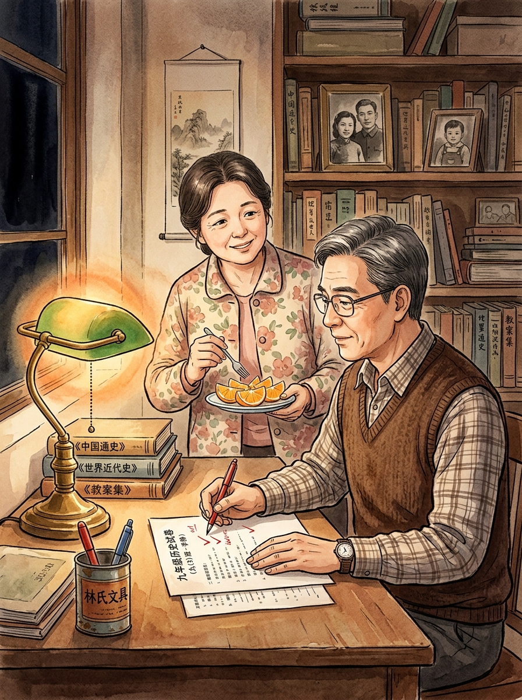

GEI Phase D Round 011 · Public Release
第二次
署名
一部经过 11 轮 GEI 迭代的中文女性向重生复仇小说。她从湖边死亡回到开题前，用录音键、证据链和女性同盟，把被抹掉的名字重新放回项目书。
24章完整发布版正文
11轮 Phase D 迭代精修
95.5GEI 综合评分 / 100
GEI Phase D Round 011 · Public Release
一部经过 11 轮 GEI 迭代的中文女性向重生复仇小说。她从湖边死亡回到开题前，用录音键、证据链和女性同盟，把被抹掉的名字重新放回项目书。
这不是一次性提示词产出的故事。GEI Agent 走完 Phase A 需求识别 → Phase B 设定与开篇 → Phase C 质量评估 → Phase D 11 轮 CEO 循环精修，把爽文骨架、女权视角、智性取证和现实主义后段缝在一起。每轮都有独立的目标、产物与评分变化。
10 秒文学意象蒙太奇 · 16:9 720p · gei-imagine 多模态生成,带钢琴大提琴配乐 · 点击 ▶ 开始播放
研究"集美文学"语境，建立现代女频重生复仇框架，设计世界观/人物/24 章大纲，写出开篇样章并完成首轮质量评估。
把"体内模型 / 脑内豆包 / 符合组织要求[强] / 男一男二争风吃醋"纳入结构系统，新增 beat-map 平衡爽点、痛点、泪点。
女主升级为社会学博士，行动半径扩展到博士课题、社会项目和校企合作；陆知白升级为陆氏寰球家族公子，加入"震惊校长"中段强爽点。
完成 24 章草稿（1987 行），引入文学大师 agent 独立评估，识别"资源外挂感、后半段过快、反派复杂度不足、结尾宣言偏重"四个问题。
陆氏资源降为外部预审之后的放大器，加深周予衡/宋绮年动机，新增第 18 章何蔓被压/刘姨调岗/蒋曼青材料被质疑的低谷段，结尾去宣言化。
新增宋绮年新闻发布会反扑，按七个月展开专项调查、学术审查、基金会资助压力、证人保护、公安侦查、民事开庭、校内处分，刑民分轨。
把原第 20 章拆为《七个月》《判决书》两章，全书 23→24 章；程序线加入季节、谈话室、合租屋、疲惫协作等场景细节，让判决爽点独立成章。
前 8 章新���/强化章尾短钩子，脑内豆包提示去系统日志感，第 8 章男一男二初见删重复、强化风险与技术互补，团队关系更早成形。
统一正文/大纲/评审 24 章结构，修正大纲早期遗留措辞（工具人式、脑内模型、宋家切割、刑事责任等），新增 publication-checklist.md。
新增 release/第二次署名-发布版.md 与 release/delivery-report.md；发布版正文从清稿正文机械复制以避免版本漂移；publication checklist 标记发布包完成。
新增静态阅读页 website/index.html，使用 GEI 多模态能力生成 3 张项目插图（Hero/阅读区/创作过程），把 24 章正文按 Markdown 直接渲染。
对发布版做独立内容评估（含 7 维度评分），用 gei-imagine 双路径生成 9 张人物肖像，重构 website 把创作过程置顶、原文阅读置底，加入作者信息，并完成 GitHub + Vercel 公开部署���
《第二次署名》的复仇目标不是赢回男人，而是让知识劳动、女性证词和被轻视的人名进入档案。爽点来自公开反杀，也来自判决、撤稿、处分和项目重签。
她要夺回的不是一个名字的位置，而是知识劳动被看见、被承认、被记录的权利。
前世她解释、退让、等待承认；第二世她录音、备份、归档、启动程序。
宋绮年说"女性不要为难女性"，林书宁反问：互助的前提是普通女孩献祭吗？
沈砚负责程序，陆知白负责技术。他们可以争风吃醋，但权限只有"仅可评论"。
刘桂芬不再是"一个阿姨"。胸牌写下全名时，她终于成为被认真听见的证人。
前世湖边是死亡现场；第二世湖边是录音、监控、证词与报警流程闭合的现场。
真正的清算不止发生在热搜里，也落在判决书、撤稿记录和校企项目协议里。
"符合组织要求[强]"不是开挂，而是女主把创伤、训练和证据意识整合成行动规则。
这不是"谁救了女主"的故事。沈砚提供程序，陆知白提供技术，女性同盟提供证词，而林书宁始终是项目负责人。九张人物肖像由 gei-imagine 多模态能力生成，画风统一为中国当代文学水彩与水墨混合。

前世死在湖边。第二世她不再让"温和"被解读为"会做人"，把每一次羞辱转化成录音、备份、项目策略和组织方案。
"我没有把自己放在受害者的位置上。是你们把我放在那里。"

把伤害翻译成法律、校规和项目合规问题。他是男一，但不是拯救者，他的吸引力来自边界感。
"你要我陪你去，还是只帮你审材料？"

负责技术线与资源线:匿名墙取证、网页存证、时间戳校验，以及把博士课题推成 ESG/AI 治理联合项目。
"它是检索增强，还是你自己的创伤模型？"

把亲密关系当作资源通道。借"共同成长"之名套取课题、田野材料与项目框架，并参与设计前世坠湖。
"书宁，我们之间一定要分这么清楚吗？"

把"女性力量"当成阶层装饰。她最擅长说的话是:"我是在帮你成长。"
"书宁，我一直觉得女孩子应该体面一点。"

前世曾旁观霸凌后沉默。第二世在林书宁给出证据后，她按下了那条录屏的"发送"键，成为第一个证人。
"我怕。但我还是把录屏发了。"

曾被宋家资助项目排挤，学术署名被夺。第二世帮助林书宁理解校内申诉流程，提供学术证据链。
"署名页一定要带版本号和时间戳。"

前世见过坠湖前的争执，但没人认真听她说话。第二世林书宁提前与她建立信任，使她成为关键目击者。
"我以前以为，我就会拖地、倒垃圾、开灯。后来林博士跟我说，我看见的东西也算数。"

父亲教她"历史不是胜利者写的，而是幸存证据之间的争执"；母亲教她做资料索引、备份。第二世里，她的证据管理方式来自母亲。
"有证据的人，也要有人愿意听。这次历史写上了你的名字。"
24 章完整发布版正文，已完成多轮清稿。从湖边死亡到第二次署名，林书宁用证据链重新夺回自己的名字。来源:release/第二次署名-发布版.md。